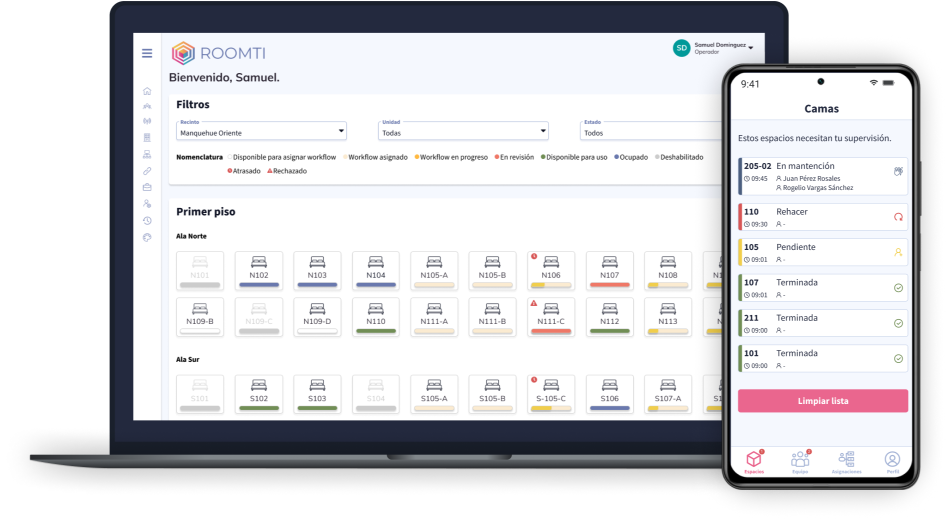
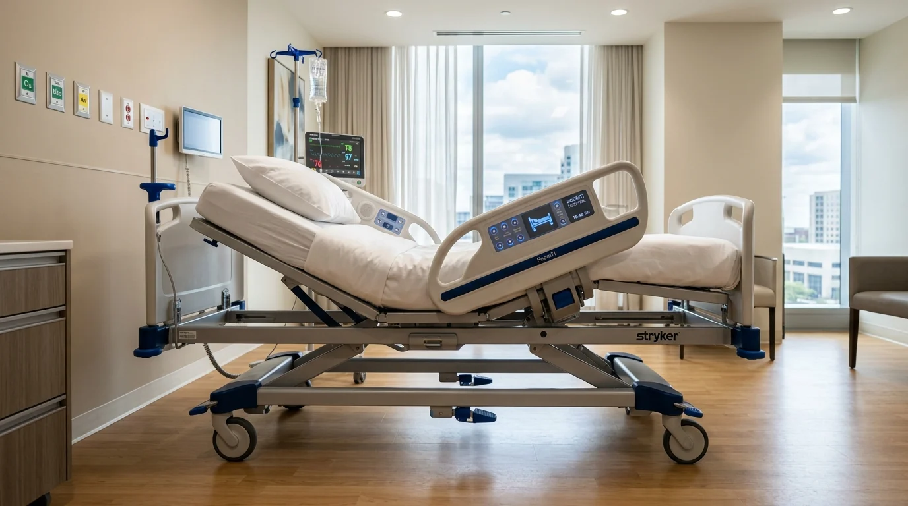
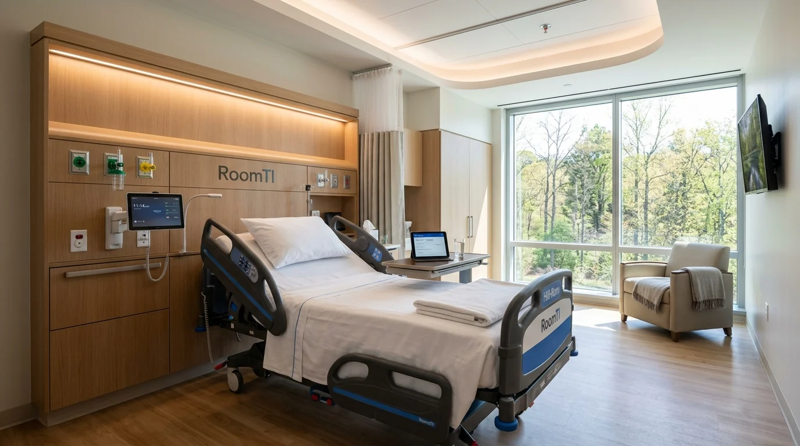

Módulos de RoomTI
Alta de Pacientes coordinada
Coordina desde el Médico y equipos para ejecutar en forma rápida todas las indicaciones al alta. Reduce demoras en la salida del paciente y activa la preparación de la cama.
Admisión desde Urgencia
Coordina la solicitud y asignación de cama desde urgencia. Agiliza la admisión y el traslado del paciente para dar continuidad a su atención.
Preparación de Cama
Coordina aseo, ropería y mantenimiento en un solo flujo. Supervisa cada tarea y reduce los tiempos de preparación para recibir al próximo paciente.
Control de KPI y SLA
Establece tiempos promedio de preparación con alertas preventivas y permite evaluar con precisión los contratos externalizados de aseo y mantenimiento.
Gestión de Camas
Visión clara de las solicitudes de camas, ya sea por demanda programada, no programada o traslados internos o externos. Visión 360 del estado alta del paciente y de la preparación de cada cama para el siguiente ingreso.
Integraciones
Conexión con los sistemas hospitalarios existentes a través de un motor de integración incorporado en la plataforma, sin embargo puede funcionar de manera autónoma si es necesario.
La plataforma líder para la gestión integral de camas.
Hacemos visible todo el ciclo de liberación y preparación de una habitación hospitalaria, definiendo múltiples flujos de trabajo según su tipo, coordinando el alta médica y el alta administrativa, las indicaciones al alta, el traslado y la preparación de la habitación para el próximo paciente.

App Móvil Colaborativa
Coordina y notifica a todos los involucrados a través de sus dispositivos móviles. Permite registrar y medir los tiempos de cada etapa de preparación en tiempo real.
Imagen 3
Imagen 3.
Unidad de Gestión de Camas (UGC)
Visión clara y precisa del estado de preparación de cada cama para el siguiente paciente, agilizando la asignación y evitando traspasos pendientes entre turnos.
Imagen 5
Imagen 5.
Resolución de Imponderables
Mensajería instantánea integrada para atender contingencias, incidencias clínicas o requerimientos especiales en un tiempo mínimo.
Camas Hospitalarias RoomTI en Diferentes Ángulos
Detalle técnico del mobiliario asistencial y los sistemas ergonómicos integrados en las habitaciones gestionadas con la plataforma.

Vista lateral que destaca la articulación biomecánica en 4 planos motorizados, panel digital de control en barandillas, ruedas dobles hospitalarias con freno centralizado y tomas de gases en cabecera.

Vista panorámica con la habitación completamente acondicionada: consola mural de madera con conexiones electromédicas, iluminación ambiental indirecta, lencería estéril y mesa auxiliar touch.
Solicite una Demo de RoomTI
Descubre cómo RoomTI transforma la eficiencia hospitalaria de tu centro de salud reduciendo tiempos de espera y optimizando cada cama disponible.